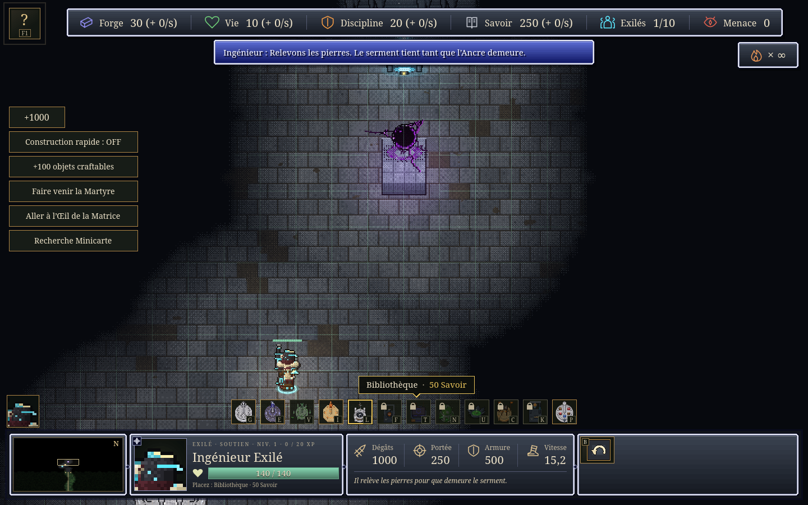
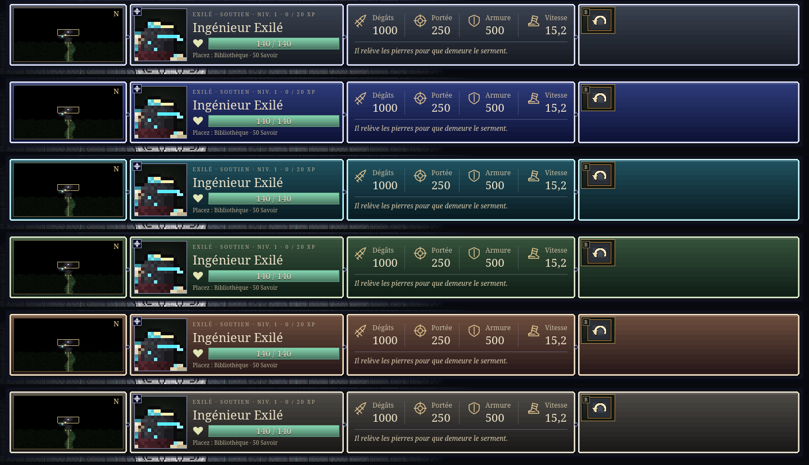
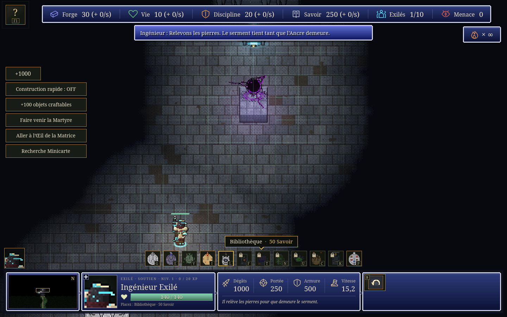
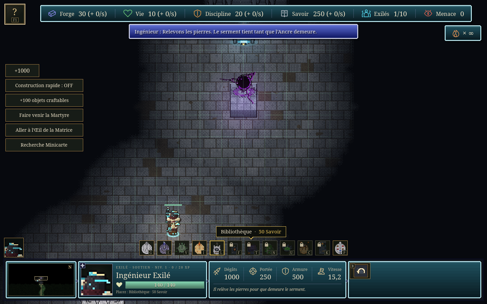
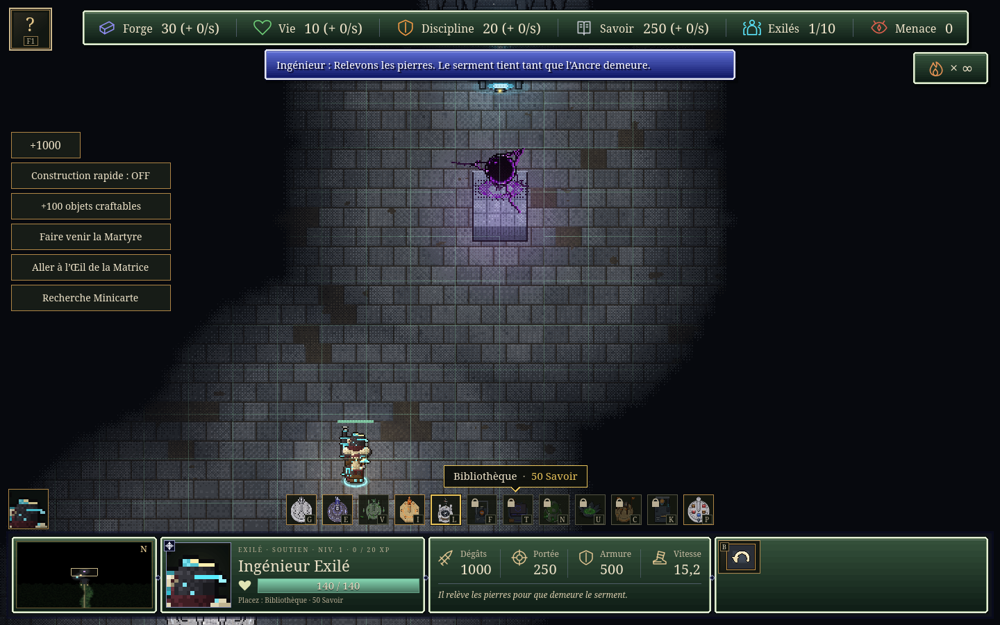
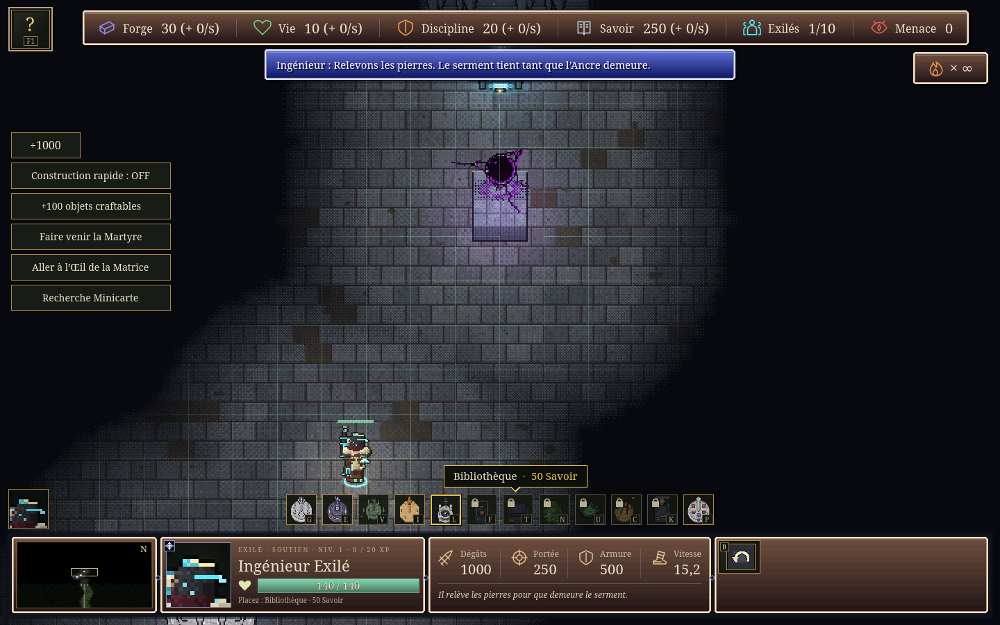
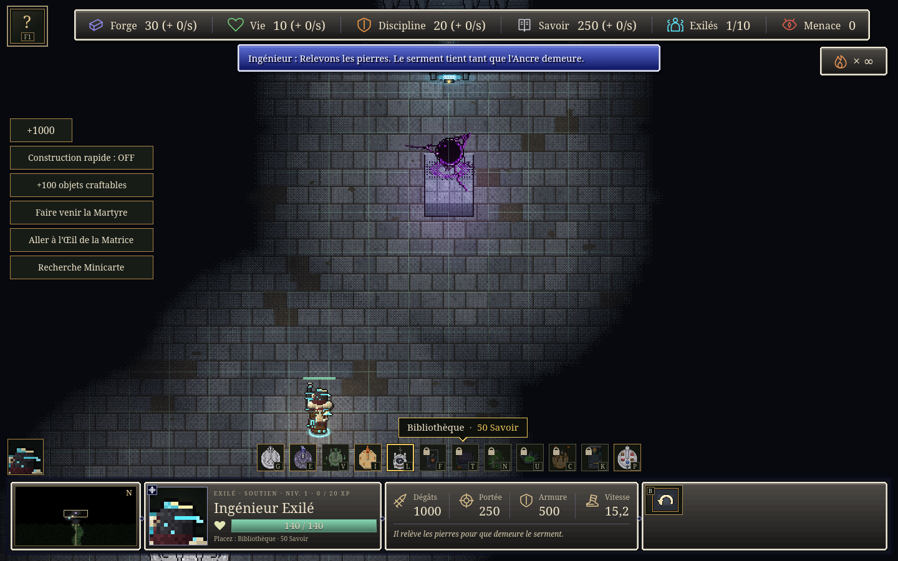

1
Ardoise

PourReprend la roche de la caverne. Neutre : les couleurs de culte et les barres de vie portent seules l’information.ContreSobre jusqu’à l’effacement, peu de caractère.
Six teintes pour les panneaux d’information, toutes sur le même cadre que la bannière de dialogue. Ce sont de vraies captures du jeu à 1440 × 900, menu de construction ouvert et une réplique affichée, pour juger chaque teinte à côté du bleu des dialogues et des boutons en laiton.







Ce qui ne change pas d’une teinte à l’autre. Le cadre (coins cassés, double liseré, dégradé en bandes), la disposition, les polices, les boutons en laiton et la bannière bleue des dialogues.
Hors de cette planche. Le bouton d’aide et les boutons de triche à gauche gardent leur ancien habillage doré. Le portrait de l’Ingénieur en armure reste à redessiner.
Captures refaites par tests/visual/hud_tones_capture.tscn. Appliquer un choix revient à changer une constante, SnesBanner.INFO.